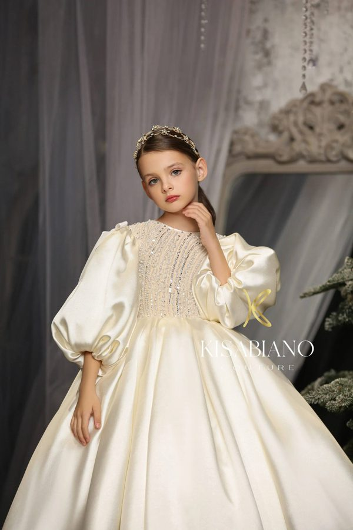
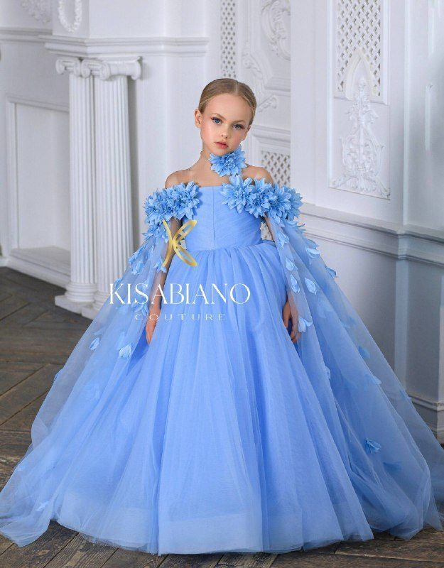
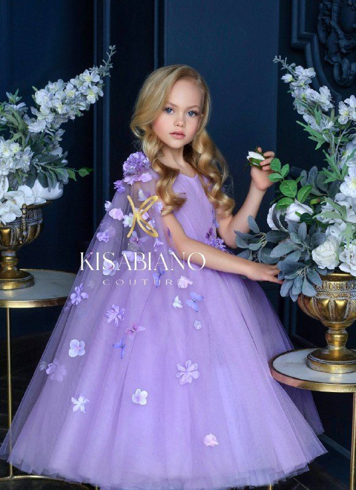

Самый крупный прокат детских платьев в Казани
Платья на выпускной в детский сад
200+ платьев в наличии
Прокат от 2 000 ₽ за сутки
Пышные, нарядные платья на рост от 98 до 146 см. Примерка в шоуруме на проспекте Победы, рядом с «Мегой».



- 200+ платьевбольше 100 моделей, рост 98–146 см
- Примерка по записиполчаса на каждую семью
- Бронь за 1 000 ₽входит в стоимость проката
Подберите платье по росту
Выберите рост ребёнка, и мы покажем модели, которые есть в этом размере.
Рост подсказывает размер примерно: платья шьются по разным лекалам. Точнее подскажем на примерке или по фото ребёнка в мессенджере.
Как взять платье напрокат
-
1
Примерка
Запишитесь в шоурум, на примерку отводим полчаса. Если приехать не получается, пришлите фото ребёнка: подскажем размер дистанционно.
-
2
Бронь
Задаток 1 000 ₽ закрепляет платье за вашей датой и входит в стоимость. Дату или платье можно поменять.
-
3
Забираете накануне
С 18:00 до 21:00 в день перед праздником. Оставляете залог: сумму проката или паспорт. Можно привезти Яндекс Доставкой.
-
4
Возвращаете
До 18:00 в день праздника. Платье не нужно стирать и гладить, просто верните его в чехле.
Хиты сезона
Платья новых коллекций, прокат от 4 000 ₽.
Почему выбирают «Крестную фею»
Самый крупный прокат в Казани
Больше 200 платьев: свыше 100 моделей, почти каждая в нескольких размерах. Часть платьев можно увидеть только в шоуруме.
Цены от 2 000 до 5 000 ₽
За сутки проката. Новые коллекции дороже, прошлых сезонов дешевле.
Шоурум у «Меги»
Проспект Победы, ЖК «Победа». Примерка спокойно, по записи, полчаса на каждую семью.
Кутюрные платья
Модели Kisabiano и платья, которые мы шьём сами. Понравившееся можно купить или сшить на заказ.
Мамы о нас и фото с выпускных
Условия коротко
Полные условия будут на отдельной странице.
- Срок
- Сутки: забираете накануне с 18:00 до 21:00, возвращаете до 18:00 в день праздника. Вне сезона выпускных срок можно обсудить.
- Залог
- Равен стоимости проката. Вместо денег можно оставить паспорт или права. Для гостей не из Казани залог двойной.
- Бронь
- Задаток 1 000 ₽ входит в стоимость. При отказе не возвращается, но бронь можно перенести на другую дату или другое платье.
- Доставка
- Платье можно отправить и забрать через Яндекс Доставку.
- Бережно
- Платье нельзя стирать, гладить и подшивать. За крупные пятна удерживаем 1 000 ₽, за порванное платье стоимость ремонта.
Шоурум
Казань, проспект Победы, 139к2
- ЖК «Победа», рядом с ТЦ «Мега»
- Подъезд 7, 2 этаж, правая дверь
- С 11:00 до 21:30, только по записи
Здесь будет карта с точкой шоурума.
Встроим, когда создадим карточку «Крестной феи» в Яндекс Картах: тогда на карте не будет чужой рекламы, а будут отзывы и маршрут.
Вопросы и ответы
Когда бронировать платье на выпускной?
Выпускные в садах идут с марта по июнь, и популярные модели разбирают на все даты. Лучше прийти на примерку зимой или в начале весны, как только станет известна дата праздника.
Как понять, какой нужен размер?
Ориентируйтесь на рост, но точнее всего на примерке: платья шьются по разным лекалам. Если приехать не получается, пришлите фото ребёнка в полный рост, и мы подскажем.
Можно забронировать без примерки?
Да, дистанционно: пишете нам, присылаете фото ребёнка, мы советуем размер, вы вносите задаток 1 000 ₽.
Что оставить в залог?
Сумму, равную стоимости проката, или паспорт либо водительские права. Для гостей не из Казани залог двойной.
Можно привезти платье домой?
Да, через Яндекс Доставку в обе стороны.
Есть короны, ободки, подъюбники?
Да: короны, ободки, заколки, перчатки, туфли и подъюбники. Подберём к платью на примерке.
Можно купить платье или сшить на заказ?
Часть платьев продаётся, они собраны на странице «Купить платье». Пошив на заказ стоит от 10 000 ₽ и занимает от двух недель до месяца.
Есть костюмы для мальчиков?
Да, смокинги, прокат 2 500 ₽.